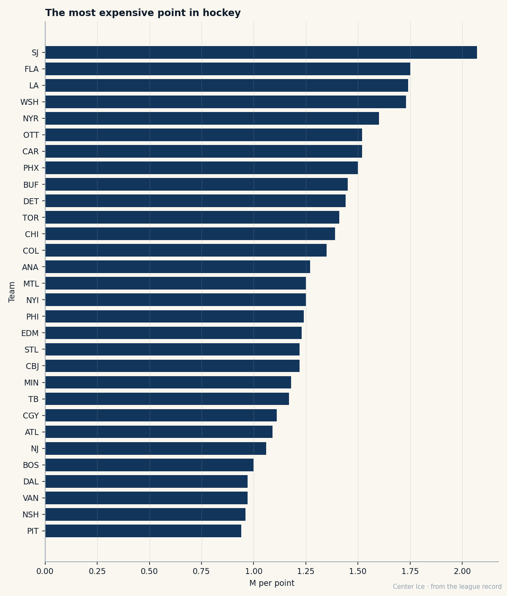

The 219th Pick Has Five Years and $9.99M on the Worst Team in Hockey: Evgeni Nabokov at 30
He came from Kamenogorsk, almost went home, and now carries a contract the Sharks can't undo and a record they can't fix.
 Carol BinghamFeatures writer · Rinkside
Carol BinghamFeatures writer · RinksideSan Jose has not won a hockey game in 12 tries. Eight regulation losses, four in overtime, 0 points earned from 24 available. The last one was a 3-1 loss to  Tampa Bay Lightning at home on January 4, in front of a crowd that watched their goaltender stop shots while nobody in front of him scored more than one.
Tampa Bay Lightning at home on January 4, in front of a crowd that watched their goaltender stop shots while nobody in front of him scored more than one.
 Evgeni Nabokov87 is 30 years old. He earns $9.99M. His contract has 5 years left. The Sharks are paying $2.07M per standings point, the highest cost in the league, and they are paying that because their best skater at 85 overall is the same player they've had since 1997 and the man behind him costs more than anyone on this sheet except three other guys.
Evgeni Nabokov87 is 30 years old. He earns $9.99M. His contract has 5 years left. The Sharks are paying $2.07M per standings point, the highest cost in the league, and they are paying that because their best skater at 85 overall is the same player they've had since 1997 and the man behind him costs more than anyone on this sheet except three other guys.
The Book has him at 90. That is his base grade, his ceiling in the Bureau's arithmetic, since the Development Index reads 0 and his potential sits at 89, one point below the grade he already carries. He is the best goaltender the Sharks drafted in 14 seasons of trying, and the number that keeps him from being the best in the league is CONS 50.
From Kamenogorsk to Kentucky
Nabokov played three seasons for Torpedo Ust-Kamenogorsk starting in 1991, when he was 16. Tim Burke, the Sharks scout who drafted him, was in Russia looking at a different goaltender. The Sharks never watched Nabokov before they picked him 219th overall in the 8th round of 1994. They did not contact him for three years. In that gap he went to Dynamo Moscow, won the Russian league championship in his first year there, reached the European Hockey League final in his third.
When the Sharks finally called in 1997, he was reluctant. He liked Moscow. His parents told him to go. He went. He spent his first year in North America with the Kentucky Thoroughblades, playing backup, struggling with the style, the travel, the cold, and planning to fly home. He stayed because he met Tabitha, and because the Sharks' goaltending coach, Warren Strelow, reworked his stance and his rebound control and turned a man with a 50 in consistency into something the Sharks could build around.
The first European goalie to score
On March 10, 2002, Nabokov skated the length of the ice after a delayed penalty against  Vancouver Canucks and put the puck into the empty net. He was the first European goaltender to score, and the first goaltender to score on a power play. What it meant was that a man drafted 219th, from a city in Kazakhstan most scouts couldn't find on a map, had outlasted every expectation the organization had when they took him in the 8th round.
Vancouver Canucks and put the puck into the empty net. He was the first European goaltender to score, and the first goaltender to score on a power play. What it meant was that a man drafted 219th, from a city in Kazakhstan most scouts couldn't find on a map, had outlasted every expectation the organization had when they took him in the 8th round.
In 2003-04 he won 28 games and helped the Sharks reach the third round of the playoffs for the first time in franchise history. The background sheet says the 2004 extension gave him almost $4.5M a year. What it gave him after that is $9.99M, 5 years left, the longest and richest contract on the roster.
The roster around him
The best skater on  San Jose Sharks is
San Jose Sharks is  Patrick Marleau85, who carries an 85 today. The next best is
Patrick Marleau85, who carries an 85 today. The next best is  Eric Brewer83 at 83, then
Eric Brewer83 at 83, then  Jeff Hackett83 at 83, then
Jeff Hackett83 at 83, then  Brad Stuart80 and
Brad Stuart80 and  Boris Mironov80 at 80. No 90, no 88. The Sharks' payroll is $66.24M, third in the league, and it has bought 11 wins in 40 games.
Boris Mironov80 at 80. No 90, no 88. The Sharks' payroll is $66.24M, third in the league, and it has bought 11 wins in 40 games.

The last 12 games tell the story in one-digit margins. Eight of the twelve were decided by one goal. San Jose has scored exactly 29 goals in that stretch, fewer than 2.5 a night, and allowed 39. They lose close because nobody in front of Nabokov can put the puck in the net and nobody in front of the other goaltender can stop it either.
| Game | Opponent | GF | GA | Result |
|---|---|---|---|---|
| 2006-01-04 | TB | 1 | 3 | L |
| 2006-01-02 | CHI | 2 | 3 | L |
| 2005-12-31 | DET | 3 | 4 | OTL |
| 2005-12-29 | CBJ | 2 | 3 | L |
| 2005-12-28 | CBJ | 2 | 3 | L |
| 2005-12-26 | COL | 1 | 3 | L |
| 2005-12-23 | LA | 3 | 4 | OTL |
| 2005-12-20 | PHX | 2 | 3 | L |
| 2005-12-18 | ANA | 3 | 4 | OTL |
| 2005-12-17 | LA | 3 | 4 | L |
| 2005-12-14 | ATL | 3 | 4 | OTL |
| 2005-12-12 | NSH | 1 | 3 | L |
Nabokov's personal line: 31 games played, 9 wins, 22 losses, 0 shutouts, a 2.79 GAA, a .859 save percentage, 90 goals against. His base grade of 90 rests on SREC 87, AGIL 85, and SPEE 85. He reads plays fast, moves well laterally, and is quick out of the crease. The 50 in CONS is the one that makes those numbers unreliable. The Book sees a man who can be great on any night and mediocre on the next, and the Sharks are watching it play out 41 more times this season before they can do anything about it.
The contract nobody can break
Five years at $9.99M means the Sharks have committed to one goaltender through his mid-30s. The potential number says 89, which is one point below his base. The Index says 0. He is not going to get better. What they have is a man who came from Dynamo Moscow, who almost went home from Kentucky, who scored a goal against Vancouver because he was the kind of goaltender who skated the length of the ice when no one else would, and who is now the best thing in a building that costs more than almost everything else in this league and wins less than almost everything else.
At 30, in a season where his team will not win, the 219th pick has the longest contract on the roster and a base grade that will not move. He is everything the Sharks are: one very good man in front of a team that cannot score two goals in a hockey game.